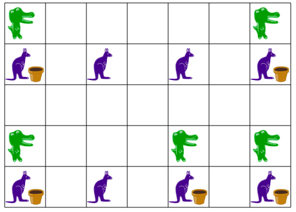
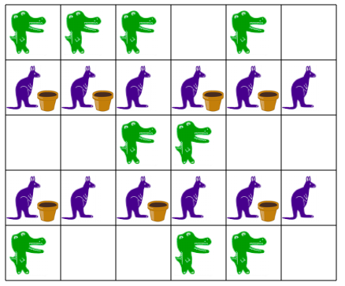

Ratkaisu
Jokainen kenguru, jonka yläpuolella on krokotiili, saa kukan. Sinun piti siten klikata jokaista kengurua, jonka yläpuolella on krokotiili, ja klikata "Kokeile". Asetelma olisi voinut olla esimerkiksi seuraava:

Jokainen kenguru, jonka joko yläpuolella tai alapuolella (mutta ei molemmissa) on krokotiili, saa kukan. Asetelma olisi voinut olla esimerkiksi seuraava:

Kenguru saa kukan, jos mikä tahansa seuraavista kolmesta pätee:
- Kengurun yläpuolella on krokotiili ja alapuolella karhu.
- Yläpuolella on karhu ja alapuolella ei mitään.
- Yläpuolella ei ole mitään ja alapuolella on krokotiili.
Asetelma olisi voinut olla esimerkiksi seuraava:

Tämä on tietojenkäsittelyä!
Tehtävän ehdot (milloin kenguru saa kukan ja milloin ei) voidaan kuvata esimerkiksi käyttäen Boolen algebraa, joka on yleisesti tietojenkäsittelyssä käytetty tapa käsitellä loogisia totuusarvoja tosi/epätosi (onko kukka, onko yläpuolella karhu, jne.) sekä niistä ja/tai/ei-tyyppisillä ehdoilla muodostettuja yhdistelmiä (yläpuolella krokotiili ja alapuolelle ei tai alapuolella krokotiili ja yläpuolella ei).
Tehtävän asetelma vastaa soluautomaattia, joka on erilaisissa tietojenkäsittelyn sovelluksissa käytetty malli, jonka avulla voidaan mallintaa esimerkiksi fysikaalisia tai biologisia järjestelmiä, tai vaikkapa liikennettä. Soluautomaatti voi koostua tehtävän tapaan esimerkiksi soluruudukosta, jonka kunkin solun/ruudun tila (tuleeko kukkaa) riippuu sen vierekkäisten solujen sisällöistä. Toisin kuin tässä tehtävässä, soluautomaattien käyttäytymistä simuloidaan yleensä useita askelia. Kullakin askeleella jokaisen solun tila päivitetään solujen käyttäytymissääntöjen mukaisesti. Seuraavan päivitysaskeleen tulos riippuu aina edellisen päivitysakeleen tuloksesta, jolloin soluautomaatti voi käyttäytyä ajan mittaan varsin monipuolisellakin tavalla. Yksi kuuluisa esimerkki soluautomaatista on Life-peli (Game of Life).
Katso lisää esim. https://fi.wikipedia.org/wiki/Boolen_algebra, https://fi.wikipedia.org/wiki/Soluautomaatti ja https://fi.wikipedia.org/wiki/Life-peli.